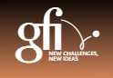
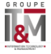
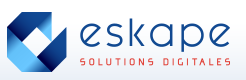
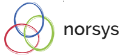

| Entreprise |
Activités |
|
| GFI |
Conseil en systèmes et logiciels informatiques |
 |
| ATOS |
Infrastructure & Data Management / Business Applications & Platform Solutions / Big Data & Cybersecurity |
 |
| CAPGEMINI |
Services informatiques et transformation numérique |
 |
| CGI |
Services en technologies de l'information et gestion des processus d'affaires |
|
| IT&M |
Conseil en management et organisation / Conseil en transformation digitale à travers la data science et
la gestion de données |
 |
| SOPRA STERIA |
Transformation numérique des entreprises |
|
| ESKAPE |
Réseaux spécialisé dans le cloud / Progiciel de gestion Microsoft Dynamics |
 |
| LOGIN SECURITE |
Cybersécurité |
|
| OPEN |
Big Data / Gestion infrastructure / Conseil en technologie |
 |
| Norsys |
Conception / Gestion de Projet / Formation |
 |